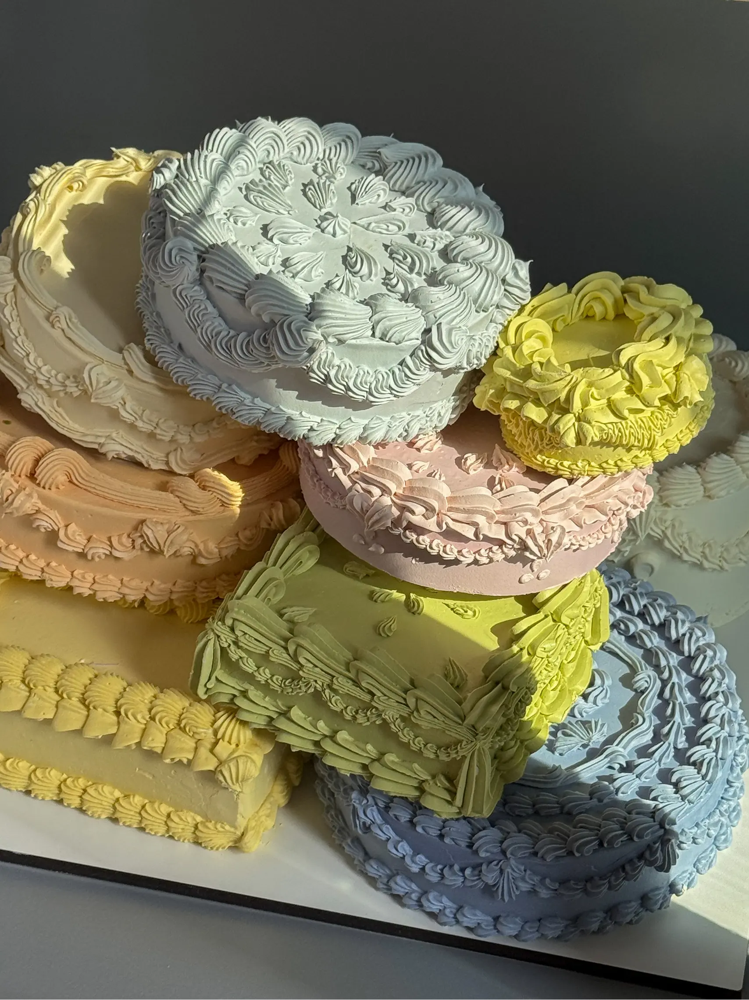
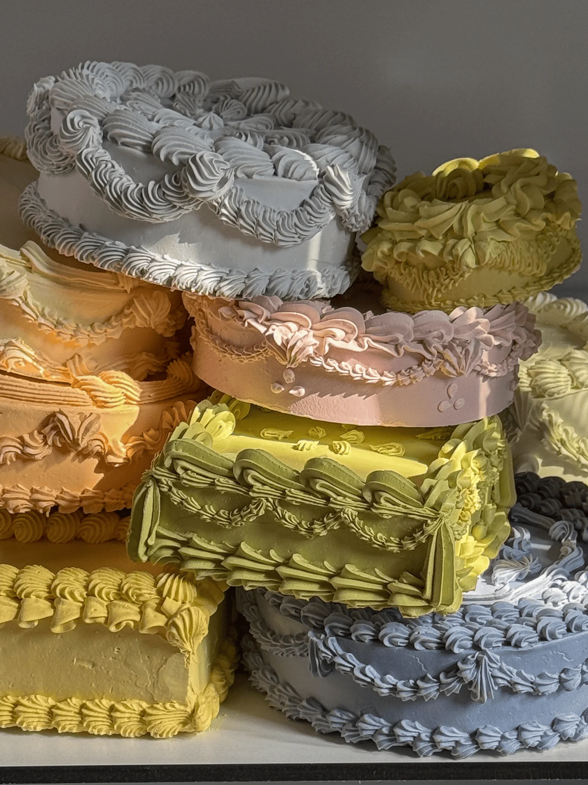
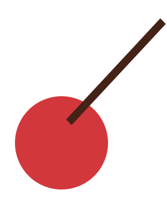

Ещё более смелый и фееричный вариант торта Белль.
Каждый ярус/торт может быть с разной начинкой, а какие-то из них могут быть фальш ярусами. Может быть как разноцветным, так и монохромным. Цвет и другие детали могут меняться по вашему желанию.
Торт назван в честь заколдованного персонажа мультфильма «Красавица и чудовище» компании Дисней.
